Archived from https://takeuforward.org/data-structure/maximum-sum-path-in-binary-tree/
Problem Statement: Given a Binary Tree, determine the maximum sum achievable along any path within the tree.
A path in a binary tree is defined as a sequence of nodes where each pair of adjacent nodes is connected by an edge. Nodes can only appear once in the sequence, and the path is not required to start from the root.
Identify and compute the maximum sum possible along any path within the given binary tree.
Examples
Input: Binary Tree: -10 9 20 -1 -1 15 7
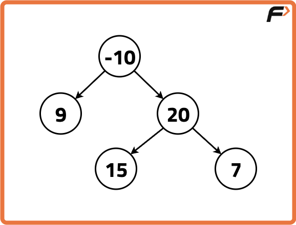
Output: 42Explanation:
Out of all the paths possible in the Binary Tree, 15 -> 20 -> 7 has the greatest sum ie. 42.
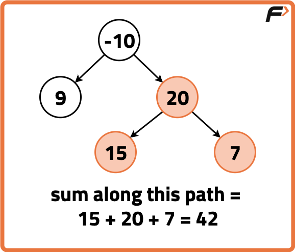
Input: Binary Tree: -2 2 1
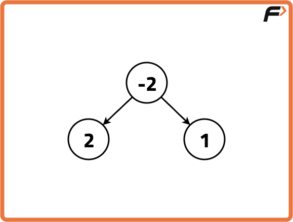
Output: 2Explanation:
Out of all the paths possible in the Binary Tree, a path starting and ending at the node with value 2 has the greatest sum ie. 2.
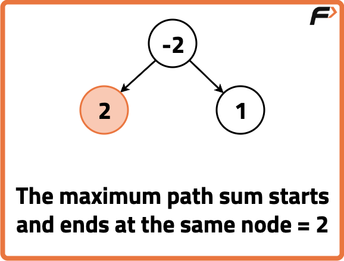
Disclaimer:
Here is the practice link to help you assess your knowledge better.
It's highly recommend trying to
solve it before looking at the solution.
Approach
Algorithm
To find the maximum sum path in a binary tree, we treat every node as a possible turning point. At each node, we calculate the maximum path sum by adding the node’s value to the maximum path sums from its left and right subtrees.
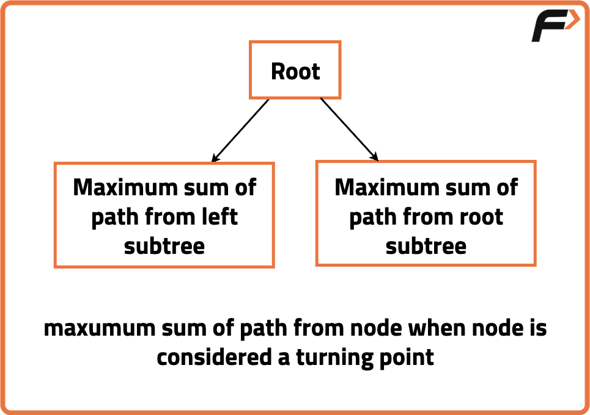
We can solve the maximum path sum problem using recursively traversing the tree and treating each node as a possible turning point. At every node, we calculate two things:
The maximum path sum that passes through the current node (left + right + node value). This is used to update our global maximum.
The maximum path sum from the current node down one side (either left or right), which we return to the parent call.
If a node is null, we return 0 since it doesn’t contribute to the path. This way, we explore all possible paths and keep track of the highest one found.
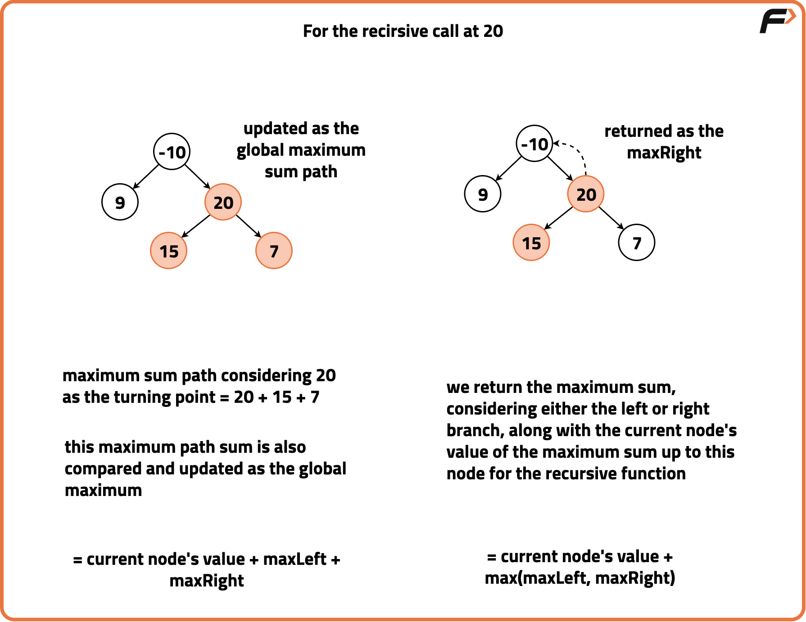
Use a recursive function that explores each node in the tree, calculating the best path sum from its left and right branches. If a node is null, treat its path sum as zero.
For each node, calculate the total path sum by adding the current node's value and the sums from both its left and right branches.
Update the tracked maximum path sum if this total is larger than what we had before.
Return the best one-sided path (either left or right plus the current node) to be used in calculations above in the recursion.
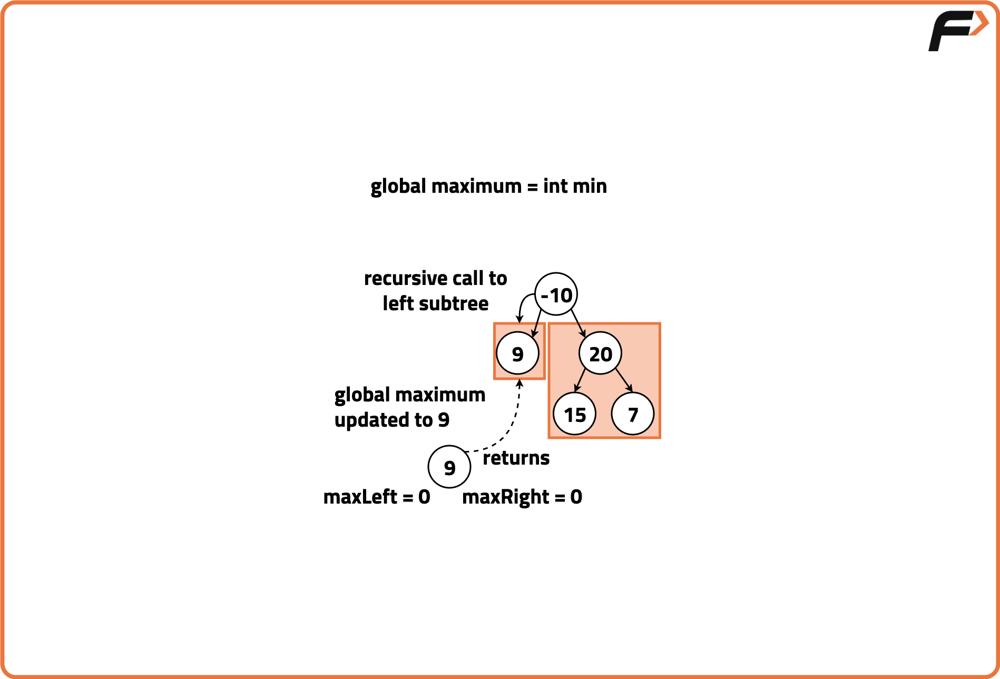
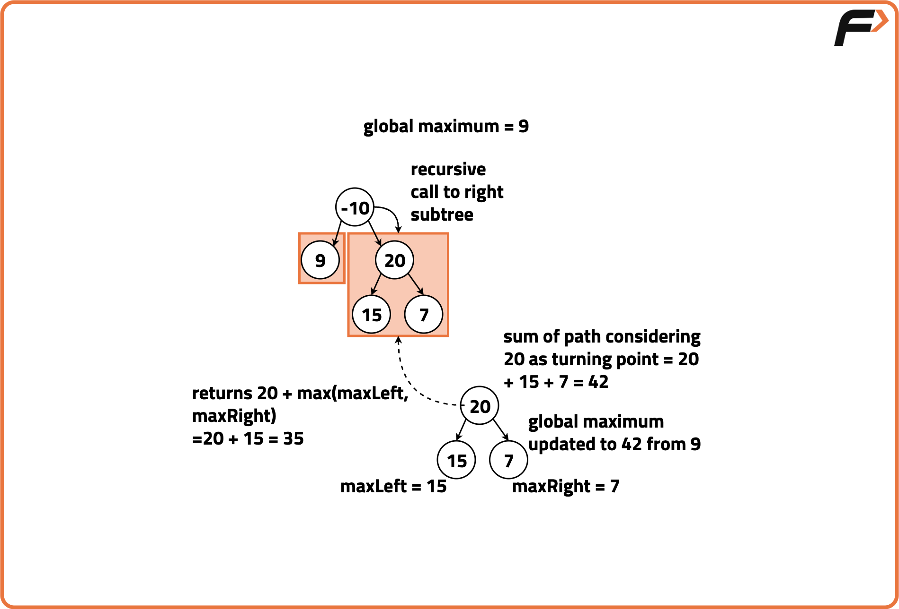
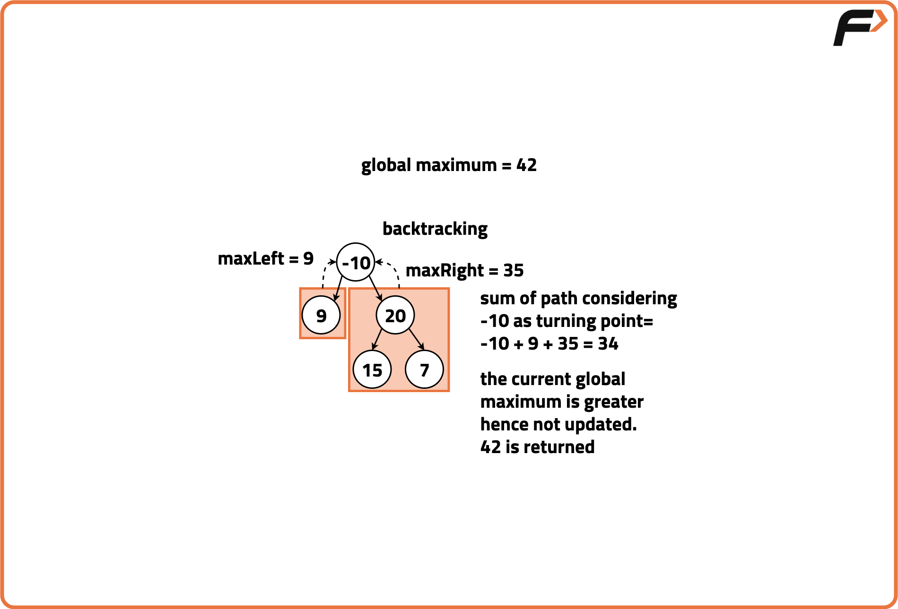
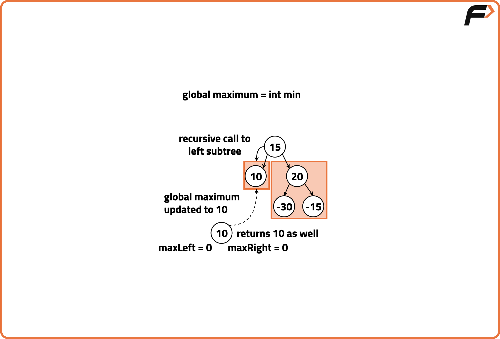
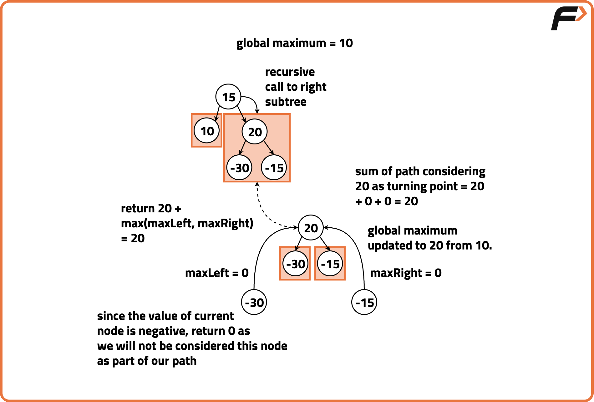
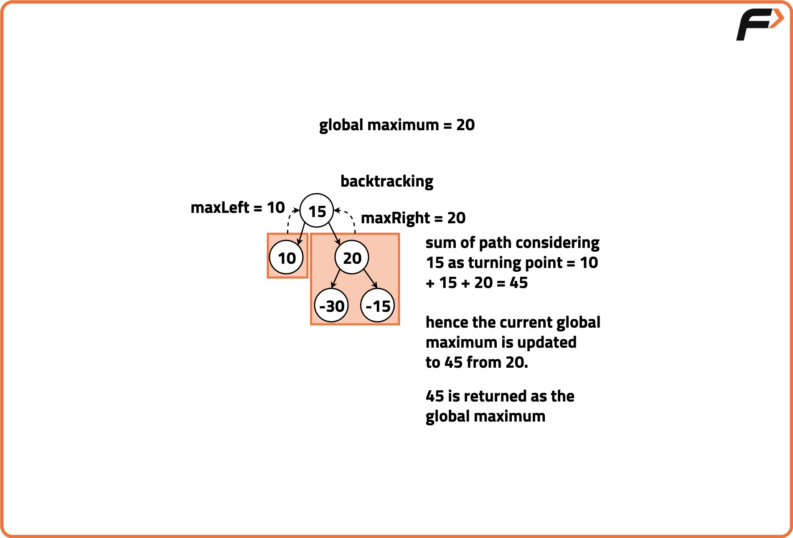
Code
#include <bits/stdc++.h>
using namespace std;
// Tree Node Definition
struct TreeNode {
int val;
TreeNode* left;
TreeNode* right;
TreeNode(int x) {
val = x;
left = NULL;
right = NULL;
}
};
class Solution {
public:
// Function to find max path sum in the tree
int maxPathSum(TreeNode* root) {
int maxSum = INT_MIN;
dfs(root, maxSum);
return maxSum;
}
// Helper function for recursive DFS
int dfs(TreeNode* node, int &maxSum) {
if (!node) return 0;
// Recursively find left and right max path sums
int left = max(0, dfs(node->left, maxSum));
int right = max(0, dfs(node->right, maxSum));
// Update global max sum considering node as turning point
maxSum = max(maxSum, left + right + node->val);
// Return the best one-sided path sum
return max(left, right) + node->val;
}
};
// Driver Code
int main() {
TreeNode* root = new TreeNode(-10);
root->left = new TreeNode(9);
root->right = new TreeNode(20);
root->right->left = new TreeNode(15);
root->right->right = new TreeNode(7);
Solution obj;
cout << "Maximum Path Sum: "
<< obj.maxPathSum(root) << endl;
return 0;
}
// Tree Node Definition
class TreeNode {
int val;
TreeNode left, right;
TreeNode(int x) {
val = x;
}
}
class Solution {
// Global variable to store max path sum
int maxSum = Integer.MIN_VALUE;
// Main function
public int maxPathSum(TreeNode root) {
dfs(root);
return maxSum;
}
// DFS recursive function
private int dfs(TreeNode node) {
if (node == null) return 0;
// Calculate left and right subtree max path
int left = Math.max(0, dfs(node.left));
int right = Math.max(0, dfs(node.right));
// Update max sum considering current node
maxSum = Math.max(
maxSum,
left + right + node.val
);
// Return one-sided path
return Math.max(left, right) + node.val;
}
}
public class Main {
public static void main(String[] args) {
// Creating test tree
TreeNode root = new TreeNode(-10);
root.left = new TreeNode(9);
root.right = new TreeNode(20);
root.right.left = new TreeNode(15);
root.right.right = new TreeNode(7);
Solution sol = new Solution();
System.out.println(
"Maximum Path Sum: " +
sol.maxPathSum(root)
);
}
}
# Tree Node Definition
class TreeNode:
def __init__(self, val=0, left=None, right=None):
self.val = val
self.left = left
self.right = right
class Solution:
# Main function to call
def maxPathSum(self, root):
self.max_sum = float('-inf')
self.dfs(root)
return self.max_sum
# Recursive DFS helper
def dfs(self, node):
if not node:
return 0
# Recursively find left and right max path sum
left = max(0, self.dfs(node.left))
right = max(0, self.dfs(node.right))
# Update max sum if path through node is better
self.max_sum = max(
self.max_sum,
left + right + node.val
)
# Return one-sided path
return max(left, right) + node.val
# Driver Code
if __name__ == "__main__":
# Build test tree
root = TreeNode(-10)
root.left = TreeNode(9)
root.right = TreeNode(20)
root.right.left = TreeNode(15)
root.right.right = TreeNode(7)
sol = Solution()
print("Maximum Path Sum:",
sol.maxPathSum(root))
// Tree Node Definition
class TreeNode {
constructor(val = 0, left = null, right = null) {
this.val = val;
this.left = left;
this.right = right;
}
}
class Solution {
constructor() {
this.maxSum = -Infinity;
}
// Main function to call
maxPathSum(root) {
this.dfs(root);
return this.maxSum;
}
// DFS function to compute max sum
dfs(node) {
if (node === null) return 0;
// Get left and right subtree max path sum
const left = Math.max(0, this.dfs(node.left));
const right = Math.max(0, this.dfs(node.right));
// Update max path if node is turning point
this.maxSum = Math.max(
this.maxSum,
left + right + node.val
);
// Return best one-sided path
return Math.max(left, right) + node.val;
}
}
// Driver Code
const root = new TreeNode(-10);
root.left = new TreeNode(9);
root.right = new TreeNode(20);
root.right.left = new TreeNode(15);
root.right.right = new TreeNode(7);
const sol = new Solution();
console.log(
"Maximum Path Sum:",
sol.maxPathSum(root)
);
Complexity Analysis
Time Complexity: O(N), each node is processed once in DFS Traversal. Space Complexity: O(H), auxiliary stack space, where H is height of Binary Tree.